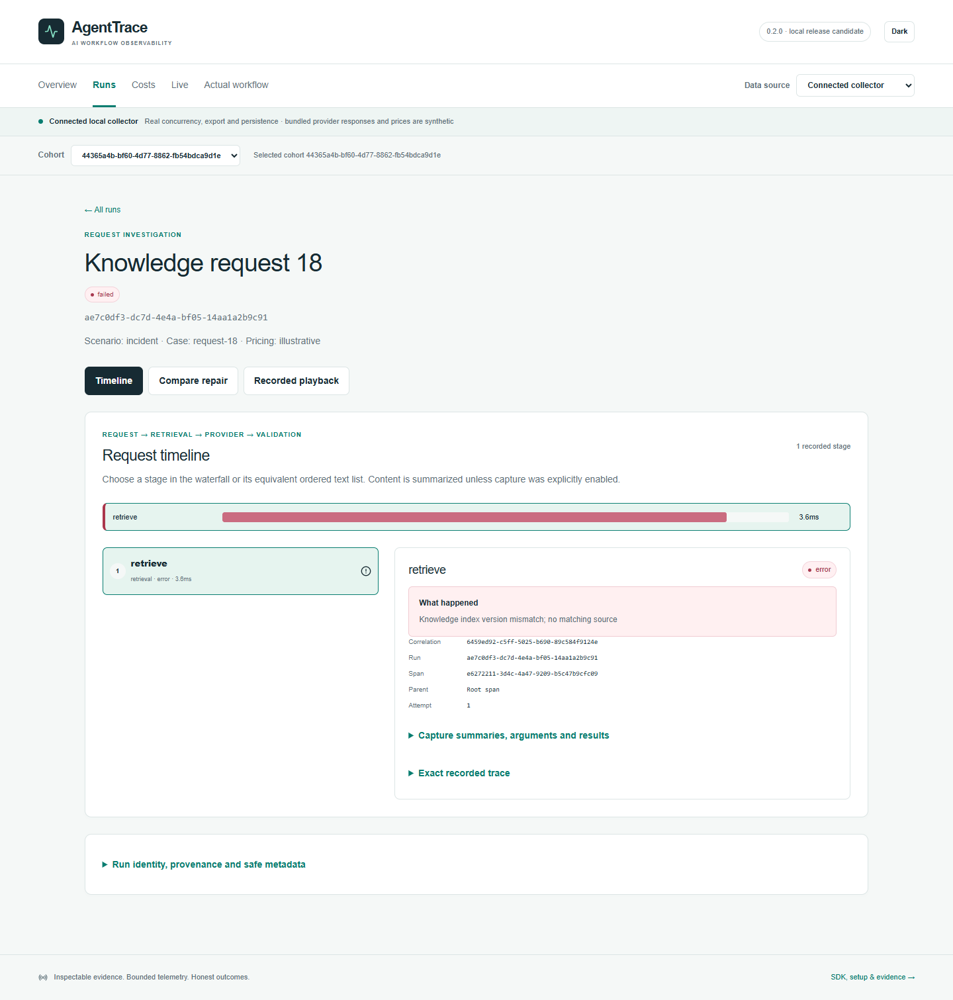
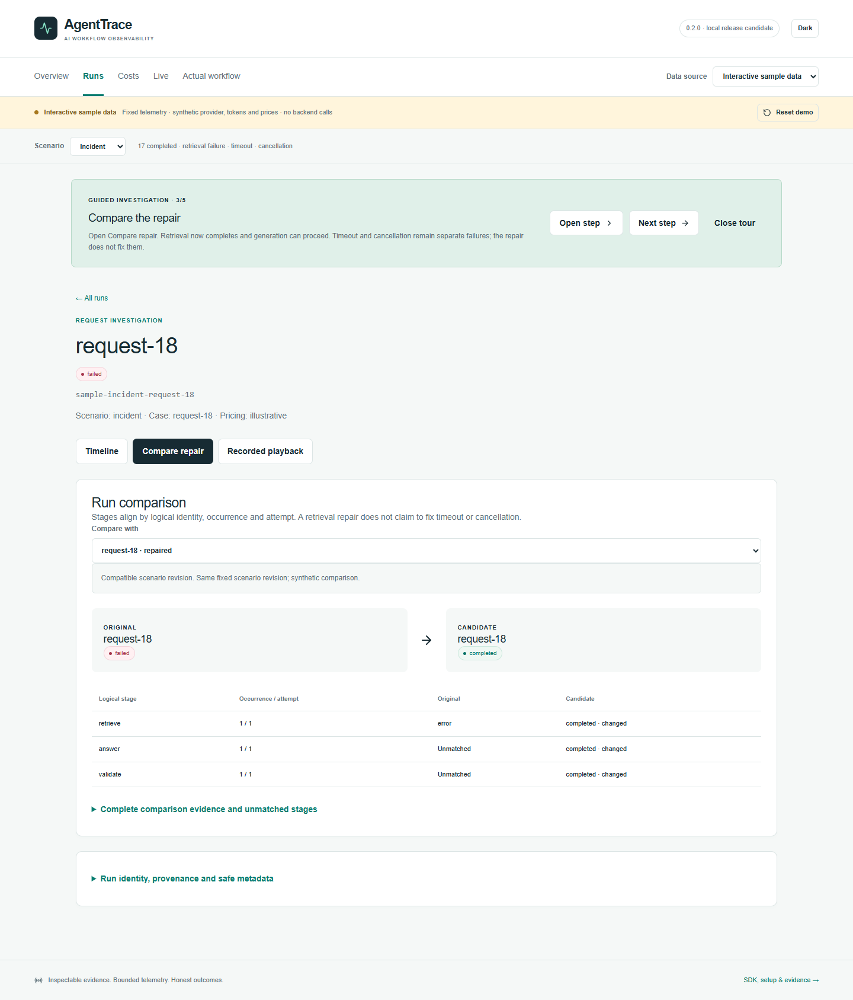
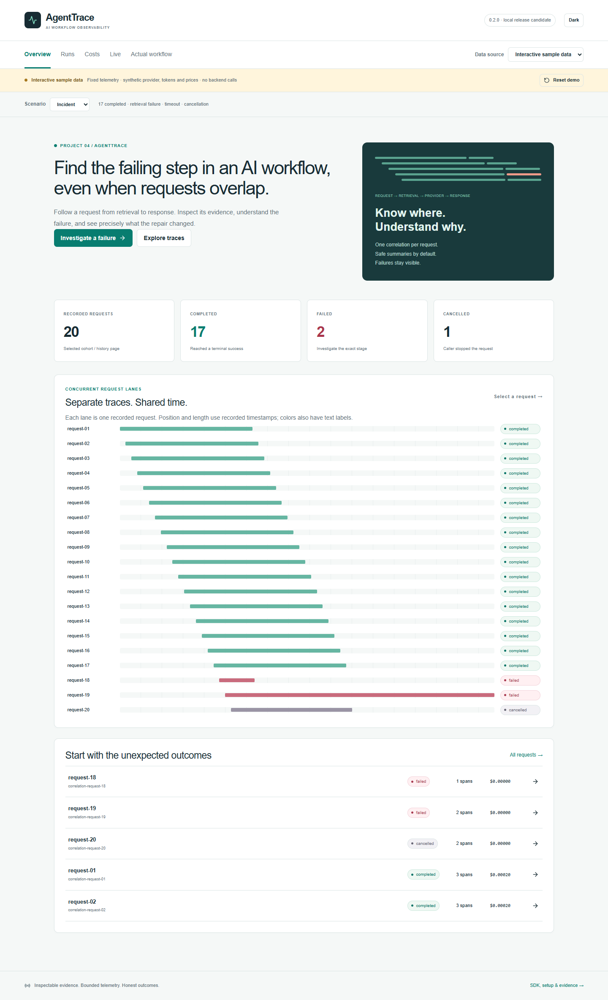

Find the failing step, even when requests overlap
AgentTrace is a tracing SDK, a local collector and a dashboard: twenty overlapping requests, one retrieval failure, and the repair beside it. The point is not a pretty chart — it is naming the step that broke, and what it cost, when the logs interleave.
The failing step, named
CONNECTED LOCAL COLLECTOR · REAL CONCURRENCY, EXPORT AND PERSISTENCE
retrieve, status error, 3.6 ms, attempt 1 —
“Knowledge index version mismatch; no matching source.” The timeline places it in
context: request → retrieval → provider → validation, with the correlation id carried through.Failed run and its repair, side by side
SAMPLE DATA · BUNDLED RESPONSES
Twenty requests in flight
SAMPLE DATA · BUNDLED RESPONSES
What is real, and what is not
Real
- concurrency, HTTP export and persistence
- span capture, correlation ids, playback of recorded traces
- the collector, SDK and dashboard code
Synthetic
- bundled provider responses
- token prices, marked illustrative in the UI
- no provider account is called by the demo